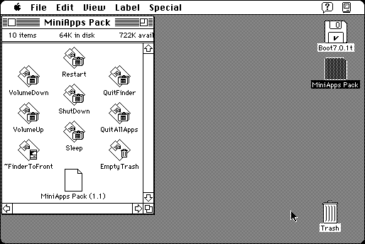

Download
miniapps-pack-11.zip (16K) Mini App Pack 1.1 repackaged into a zipped hfs disk image and checksum file. The disk image can be mounted with Mini vMac.
miniapps-pack-11.sit.bin (33K) Mini App Pack 1.1 in the original format.
copyright: Erik C. Thauvin
mod date: Dec 6, 1994
license: free for non-commercial use
last known url
(gone)
A collection of mini-applications, intended to be placed in the Apple Menu Items folder or the Startup Items folder. Each perform a single specific action, with no user interface. It “requires System 7”.

If you find these downloads useful, please consider helping the Gryphel Project, which hosts them.
Here are the md5 checksums for the downloads, signed with Gryphel Key 5:
--------- GRY SIGNED TEXT --------- 29e30c01047819a4c2b8b62190745c33 miniapps-pack-11.zip b7ea8fb679a2fcb5dcf7761aaeb4fa27 miniapps-pack-11.sit.bin ------- BEGIN GRY SIGNATURE ------- Gry/4Xa8CFcUzxdN/MJ7Ux8R9+u4UHhHGwiGLjabBE4W7qPCvcF19xUas5daged2 QNdyzas3E+6wypJHqcGgpGc4DgmC1qI43clzvSbBTv/Y0SO79mRo14Z3s2HAhbGL /HjvDMxdT5NpL9+gNoOuQsWhdjs/C7dzre63IxpxaO27oBS/jZZWlKusgPZGV9Qq -------- END GRY SIGNATURE --------